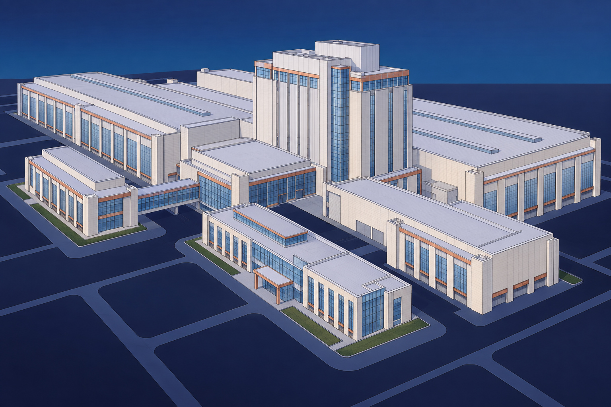

NorthStarWe Bring Answers.
NorthStarWe Bring Answers.IndustrialIndustry briefing / 01
Industrial / The recovery priorities
Recovery and renewal for complex industrial sites.
NorthStar Recovery connects incident response with NorthStar's environmental and demolition capabilities for complex industrial sites.

Start with the site's next stage.
An incident, retrofit or asset retirement brings different decisions. Define what is affected, what remains operational and the condition the owner needs at completion. Build the work around known hazards, operating interfaces and the intended next use.
01
Understand the conditions
02
Coordinate active interfaces
03
Define the end condition
40+ years of experience
Emergency response · Environmental services · Reconstruction